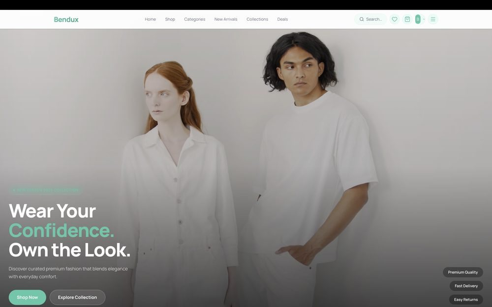

A 3D hero with a job to do
A Three.js scene with a morphing blob and floating particles gives Bendux its identity in the first second — then gets out of the way of the products.
Case study — Fashion e-commerce
Fashion stores need to feel distinctive, not like a template — while still running on real inventory.

The problem
Most fashion storefronts look interchangeable. A store needs its own character, but the visuals can’t get in the way of browsing and buying.
What made it hard
Three decisions
A Three.js scene with a morphing blob and floating particles gives Bendux its identity in the first second — then gets out of the way of the products.
Flash sales and brand filters are pulled live from the database, so the store can change its offers without anyone touching the design.
Inventory management with signed Cloudinary uploads lets the team add products and photos safely, in the same visual language as the store.
3D
Three.js hero scene
Live
flash sales and brand filters from the database
Signed
Cloudinary uploads in the admin panel
Stripe
checkout
What I learned
Motion earns its place only when it says something about the brand. The 3D hero is Bendux’s signature, so everything else on the page stays simple.
Built with
Tim · timwinchester16@gmail.com · GitHub · LinkedIn